|
Product overview
Jeen Insights
Ask your data in plain language - and see exactly how the answer was made
|
|
Hi all,
Below is a walkthrough of Jeen Insights, the natural-language analytics assistant we have been building. A user picks a data connection and asks a question in plain language - English or Hebrew - and the assistant writes a read-only query, runs it, and returns an answer with a chart, a table, key insights and clickable follow-up questions. When a single query is not enough (forecasts, anomalies, drivers, segments), it runs a validated statistical model instead. It reads curated business metadata straight from the shared Jeen Metadata catalog, so it understands your tables, columns and terms without any training or embeddings.
This email is organized as what it enables and then a feature-by-feature tour with screenshots from the live product.
|
What it enables
- Anyone can query the data by asking. No SQL knowledge required, and a first-time user gets suggested starter questions per connection. The generated SQL is always there for those who want to check it, in English or Hebrew.
- Answers you can trust and verify. Every answer shows the exact query that produced it, a step-by-step run breakdown (what ran, how long, how many tokens), and insights grounded strictly in the returned rows - never invented numbers.
- More than a single query. Built-in analysis skills - forecast, anomaly detection, drivers, segmentation, A/B tests and more - run validated models over the data, and you can choose the model/method and settings before it runs.
- Shape the result by talking to it. Refine any chart in plain words ("make it a horizontal bar chart, sorted high to low"), and ask the assistant itself what it can do or which models apply.
- It remembers the conversation. Follow-up questions build on earlier answers and their data, and a searchable history keeps every past conversation.
- Governed and portable. Read-only by construction, sensitive-data scanning, source credentials that never leave the internal service, bring-your-own or self-hosted model, and deployment on Docker, Kubernetes or OpenShift - including fully air-gapped sites.
|
1. Getting started
- A first-time user lands on a guided empty state: quick-start cards ("try a question", "see a chart", "look around first") and a set of suggested questions tailored to the connected data.
- A getting-started checklist and short coaching tour point out the connection picker, the composer, and where answers appear - all dismissible, and remembered per user.
- The rest is just typing a question; there is nothing to configure to get the first answer.
|
2. Ask a question, get an answer
- Type a question in plain language. The assistant classifies intent, loads the connection's curated metadata, writes a read-only
SELECT, runs it, and answers in one to two sentences grounded strictly in the rows.
- Key insights - a few algorithm-aware findings built from the actual results, not free-text guesses.
- Follow-up chips - clickable next questions that reference the concrete things the answer surfaced, so exploration keeps flowing.
- While it works, the pipeline shows each step live (route › catalog › generate › validate › execute › analyze), and a route pill states why the answer took the path it did.
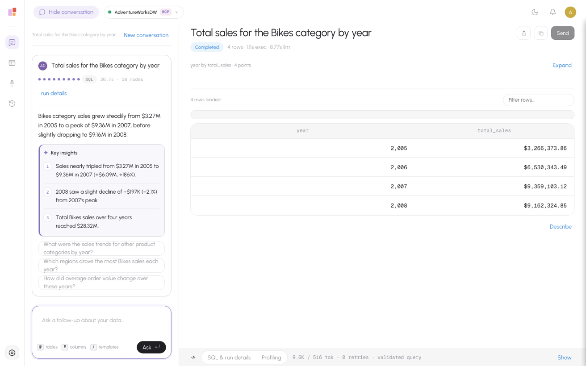
A question answered: summary, key insights, clickable follow-up questions, and the result table.
|
3. See exactly how the answer was made
- SQL & run details: the generated query is shown in full, with the grounded filter it resolved ("Bikes" → the product-category column), the tables it used, row count, execution time, LLM time, token count and retries.
- A step-by-step run breakdown lists every stage the question went through and how long each took - router, catalog lookup, filter grounding, SQL generation, validation, governance, execution, analysis - so nothing is a black box.
- Every query is parsed and validated before it runs - table-name allowlist, single-statement enforcement, SELECT-only - and scanned for sensitive columns.
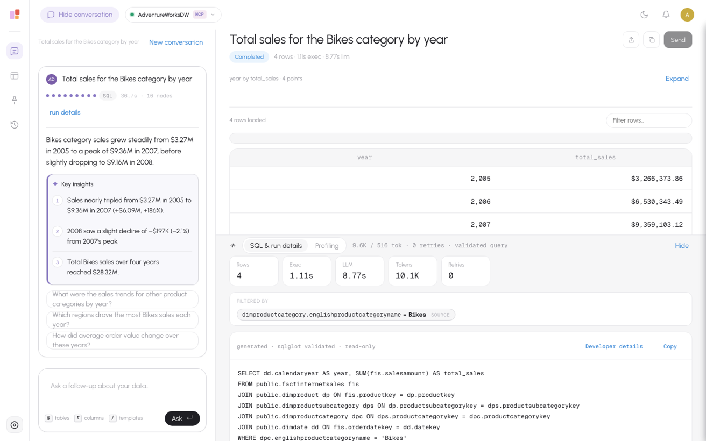
The exact read-only SQL behind the answer, with rows, time, tokens and the grounded filter.
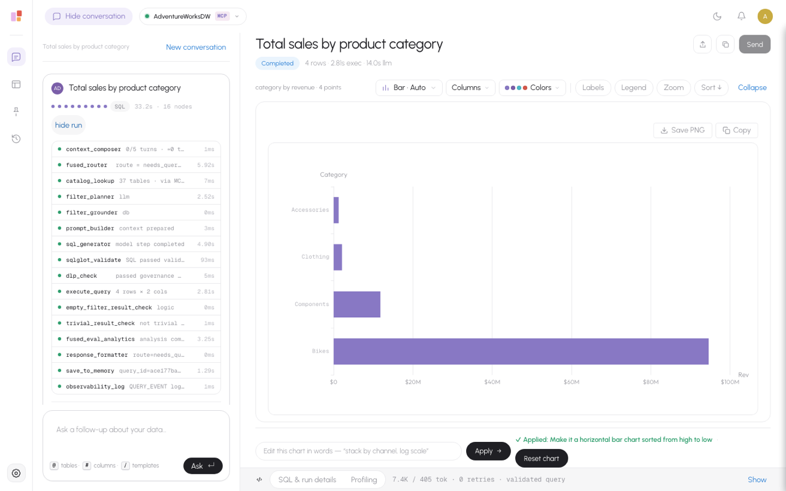
Run details: every step that ran and how long it took, end to end.
|
4. Charts and tables - and edit them by chatting
- The result is charted automatically - bar, line, area, pie/donut, scatter, heatmap, gauge, combo - with a table view alongside; an optional map layer plots geographic results.
- Edit the chart in plain words. "Make it a horizontal bar chart sorted high to low", "stack by channel", "log scale" - the assistant applies it and shows an "Applied" note with one-click Reset. The chart type and appearance change; the underlying query never does.
- Sortable, paged tables with the full result set, per-column profiling, and exports when you need the data elsewhere.
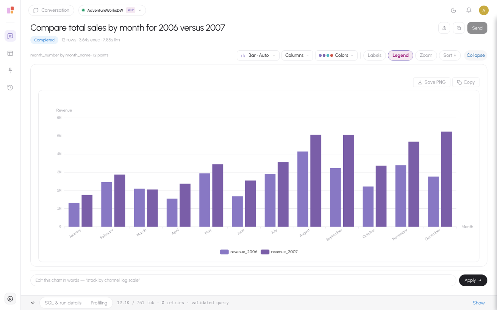
A monthly 2006-vs-2007 comparison, charted automatically - refine it right below with "edit this chart in words".
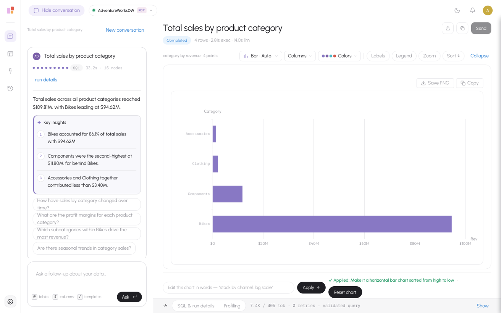
Chart edited from chat: "make it a horizontal bar chart sorted from high to low" - applied, with Reset.
|
5. It understands the words in your question
- Value and entity grounding. When you name a value ("Bikes", "Moscow", a customer), the assistant links it to the right column using the catalog and the source's own values, and even corrects a typo ("mosco" › Moscow).
- It asks when it is unsure. If "city" could mean the customer's or the dealer's city, it offers a short, clickable choice instead of guessing - and remembers your preference next time.
- Every assumption is disclosed. The applied filters are shown as "Filtered by..." chips on the answer, with one-click switches to a different field - so nothing is ever silently wrong.
|
6. Conversation memory and history
- Follow-ups build on earlier answers and their data: "of those four products, which grew fastest?" is computed over the previous result, not re-guessed.
- "Did I ask about EMEA sales last week?" searches your own history and takes you back to the answer.
- Conversations are saved per user and connection and restored when you return - every turn's question, answer, SQL, insights, and the chart and rows for recent turns.
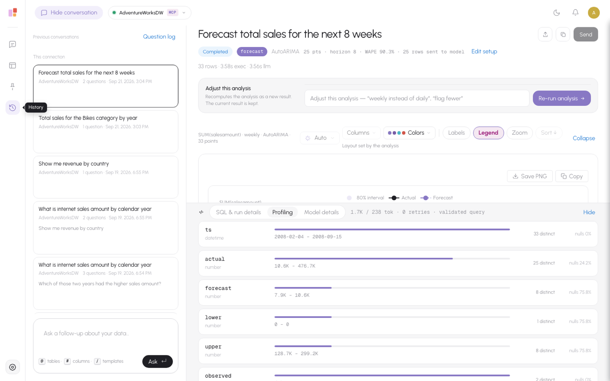
History: open, continue or search previous conversations.
|
7. Analysis skills: beyond a single query - and you pick the model
- When a question needs a model, not just a query, Jeen Insights runs a validated statistical/ML skill and explains the finding in plain language:
forecast, anomaly detection, changepoints, seasonality, correlation, contribution ("what drove the change?"), clustering/segmentation, driver analysis, regression, classification, cohort retention and A/B tests.
- Before it runs, a confirm card shows the exact setup (measure, grain, look-back, horizon, sensitivity) with editable fields and validity ranges, and states what leaves the database ("aggregates only" or "row-level, capped").
- You choose the method. Anomaly detection offers Auto / Seasonal (MSTL) / Trend (LOWESS) / 3-sigma; forecast offers Auto / ARIMA / ETS / Theta / Drift / Seasonal naive - in the card or just by saying it ("flag anomalies using 3-sigma").
- Results include a chart, algorithm-aware insights, and a Model details tab with the method, the validation metric (WAPE / MASE / R2 / AUC), the candidate models compared, and data provenance. "Edit setup" lets you change a value and re-run.
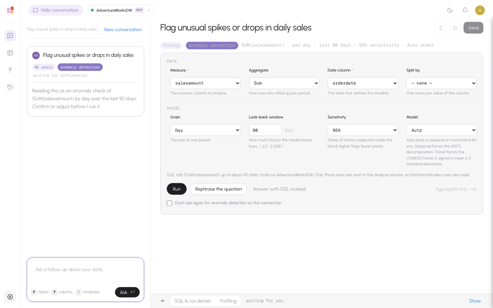
Anomaly detection: the setup card with the model (Auto / Seasonal / Trend / 3-sigma), grain, look-back and sensitivity - editable before it runs.
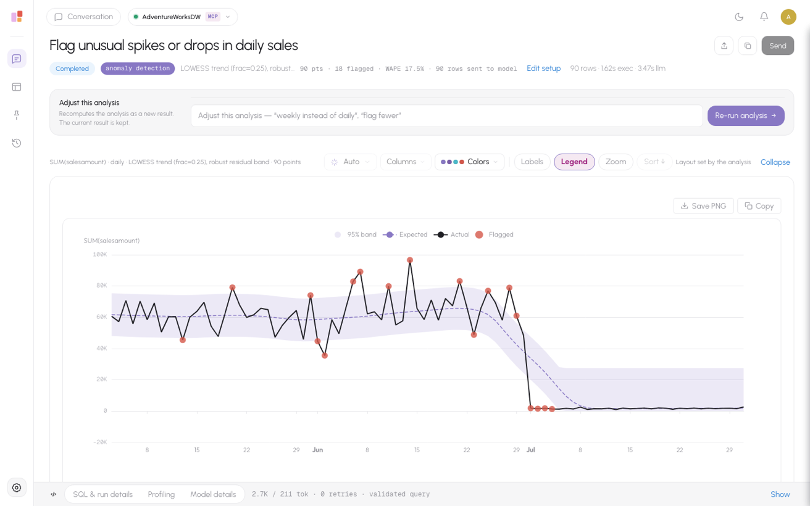
The result: actual vs. expected with a confidence band and flagged anomalies - plus insights and one-line "adjust and re-run".
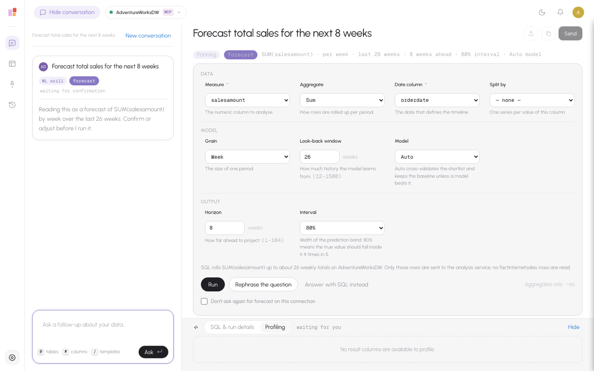
The same flow for a forecast: measure, grain, look-back, horizon and model, with the egress notice.
|
8. Ask the assistant what it can do
- Questions about the assistant itself are answered directly, without running a query: "which ML models and analyses can I run on this data?", "what can this app do?", "can I use 3-sigma on profit?"
- The answer is grounded in what is actually available for the connected data - each skill, the methods it offers, and a one-line "use it when..." - so users discover capabilities in context.
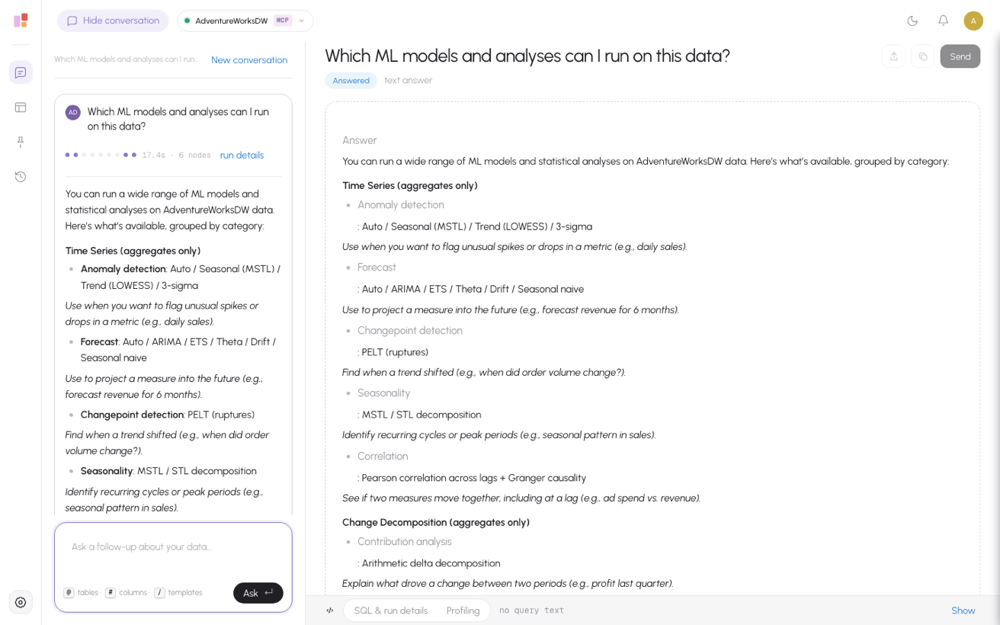
"Which ML models and analyses can I run?" - answered directly, grouped by category with the methods each offers.
|
9. One assistant, many data sources
- Switch between connections from the top bar; each carries its own curated metadata from the shared catalog.
- Supported platforms today: PostgreSQL, Trino / Presto, Databricks / Spark SQL, and Power BI semantic models via generated DAX (run with the signed-in user's own Power BI permissions, so row-level security applies).
- The read-only safety machinery - single statement, row caps, statement timeouts, secret sanitization - is shared across every connector.
- Each connection carries its own curated metadata, so the same assistant answers correctly whether it is pointed at a warehouse, a lakehouse or a semantic model.
|
10. Bring your own model, manage your prompts
- The model catalog lives in the deployment: Azure OpenAI (default), OpenAI, Anthropic, Google, or any OpenAI-compatible / self-hosted endpoint. A separate cheaper model can run the light steps.
- Live credential health checks flag a misconfigured model before users hit it.
- Every prompt the assistant uses is editable in-product and versioned, with reset to default - so behavior can be tuned without a code change. This matters for on-prem and regulated sites.
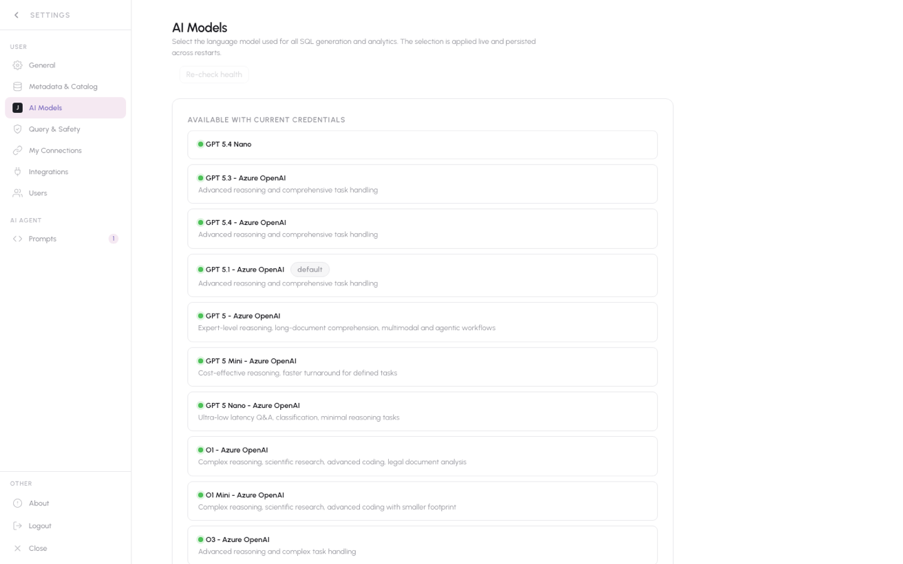
AI models: choose the provider/model per deployment, with health checks.
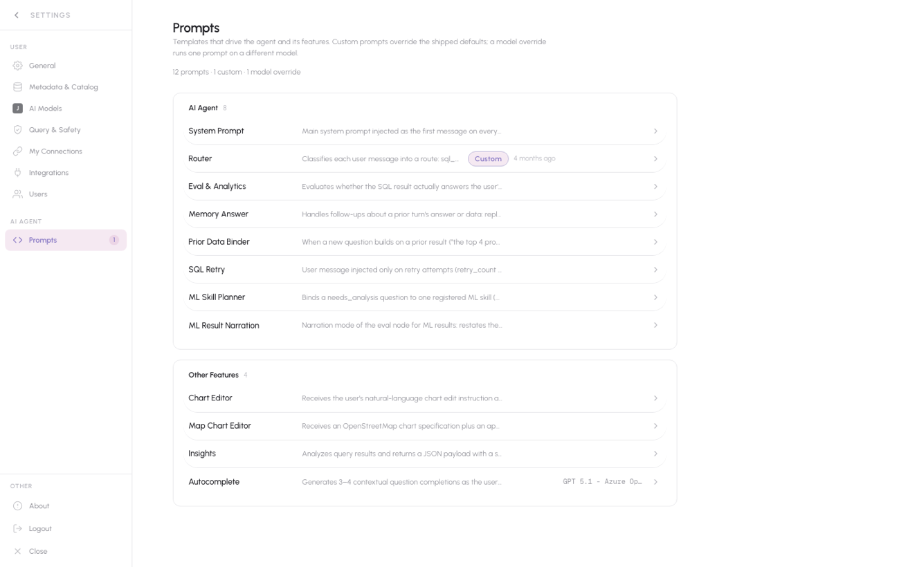
Prompt management: edit, version and reset the assistant's prompts.
|
11. Grounded in your curated metadata - no training, no embeddings
- Business descriptions for tables and columns, relationships, business terms and question→SQL knowledge pairs come straight from the shared Jeen Metadata catalog (built in Schema Modeler).
- That curated context is injected into the model at every turn and used to validate every generated query - so answers reflect your definitions, and the same catalog serves all Jeen products.
- Deny-by-default: with no catalog for a connection, the assistant will not query it. Sensitive and hidden columns are never shown or probed.
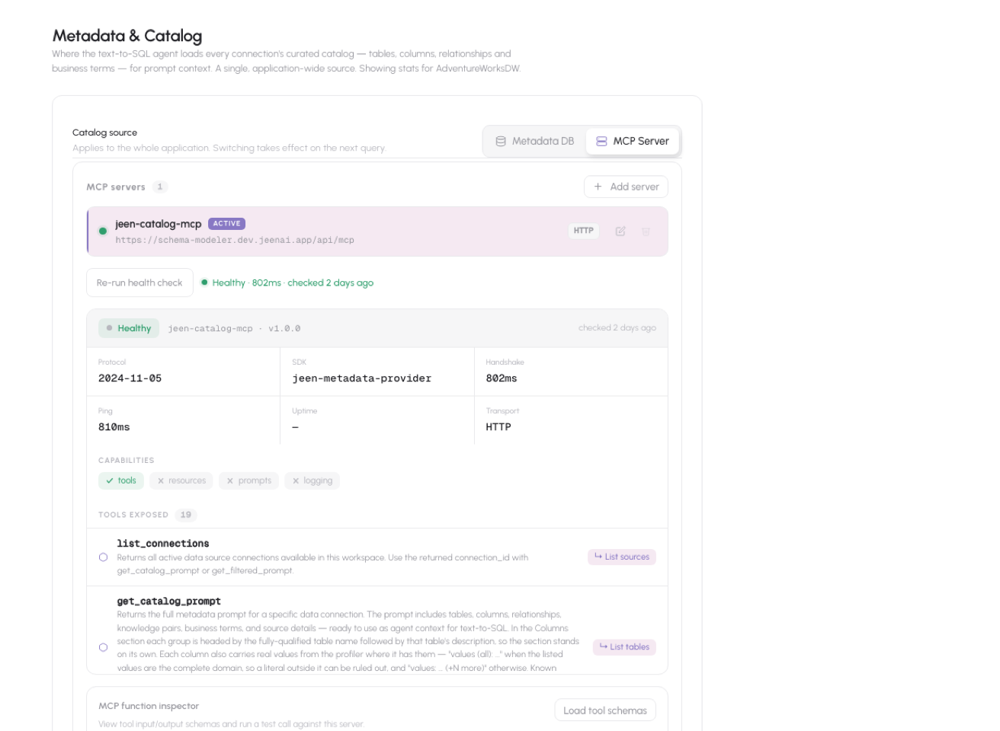
The curated metadata catalog that grounds every answer.
|
12. English and Hebrew, right-to-left
- The whole interface is available in English and Hebrew, with a proper mirrored right-to-left layout; the language is a per-user preference.
- Questions and answers work in either language, and the analysis skills, charts and insights render fully right-to-left.
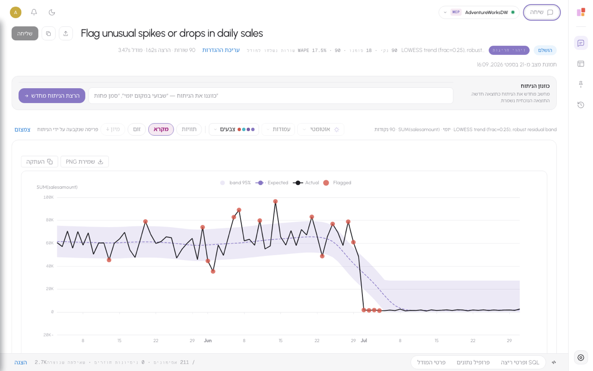
The same assistant in Hebrew, mirrored right-to-left - here an anomaly result with its band chart.
|
13. Security and governance
- Read-only by construction. Only
SELECT/WITH runs; anything that mutates data is blocked before it reaches the database.
- Credentials stay put. The public web tier never holds source credentials; it calls the internal service with a short-lived signed token, and connector secrets are encrypted at rest.
- Sensitive-data governance. A DLP scan and a deny-by-default catalog keep sensitive columns out of queries and answers.
- Enterprise sign-in. Microsoft Entra ID SSO with group-based roles; Power BI is queried under the user's own delegated permissions.
|
14. Deployment
- Two services (a public UI and an internal API) plus a sandboxed analytics service for the ML skills, all on the shared Jeen Metadata Postgres in an Insights-owned schema. No separate analytics database to run.
- Docker Compose for a laptop or a small install; Helm charts for AKS, EKS, vanilla Kubernetes and OpenShift.
- Air-gapped ready: internal registries, digest-pinned images, no runtime downloads, bundled fonts and offline map tiles, and an SMTP relay where email is needed.
|
What is next
- More connector types beyond PostgreSQL, Trino, Databricks and Power BI.
- Encrypted connection secrets at rest, and streaming answers on the analysis path.
- More interface languages (a translation-catalog task) on top of English and Hebrew.
|
|
Happy to walk anyone through a live demo.
Eldad
|
| Screenshots were taken from the live product on Sep 21, 2026 using sample AdventureWorks data. |
|